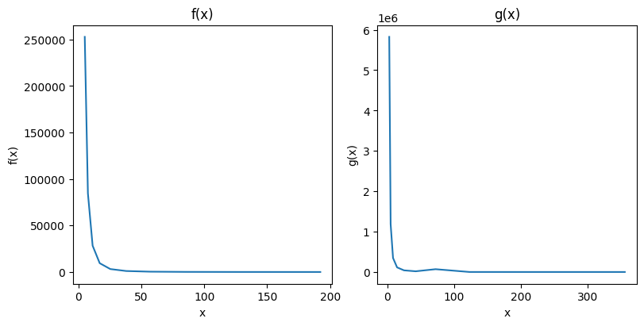
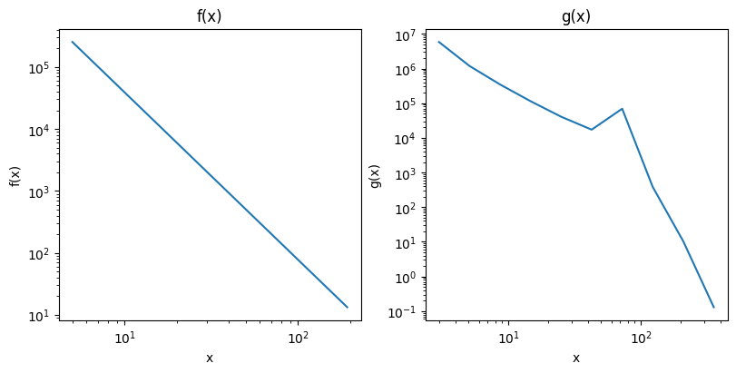
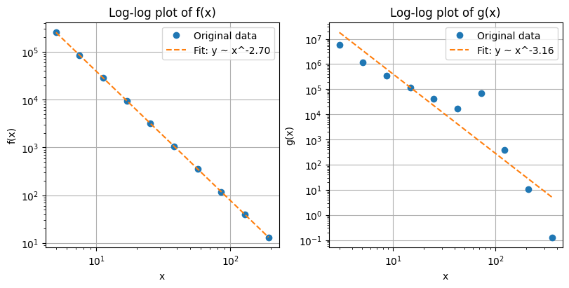
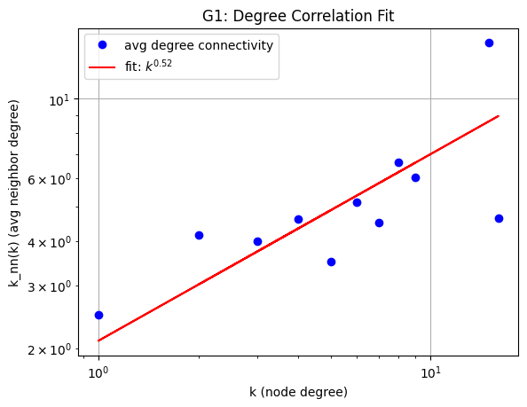
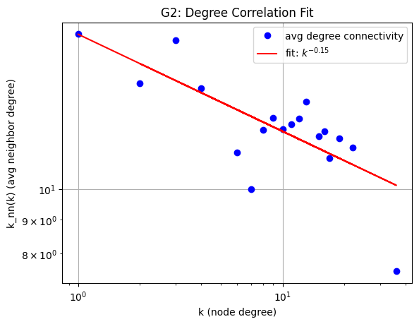
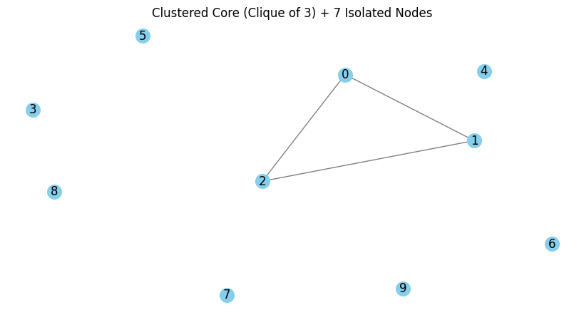
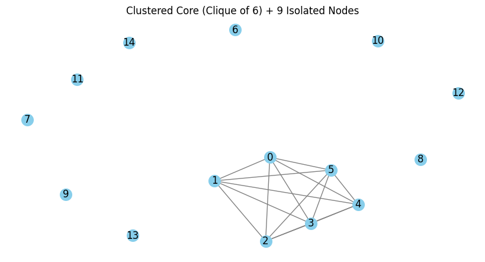
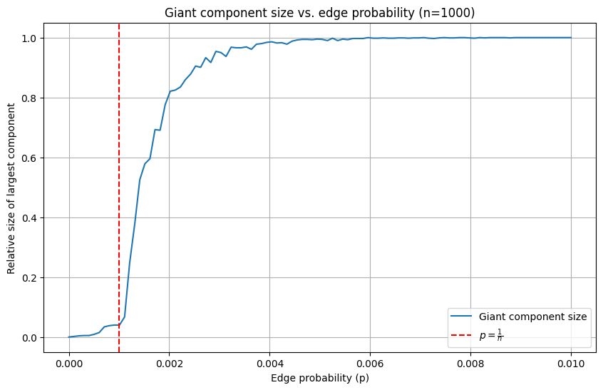
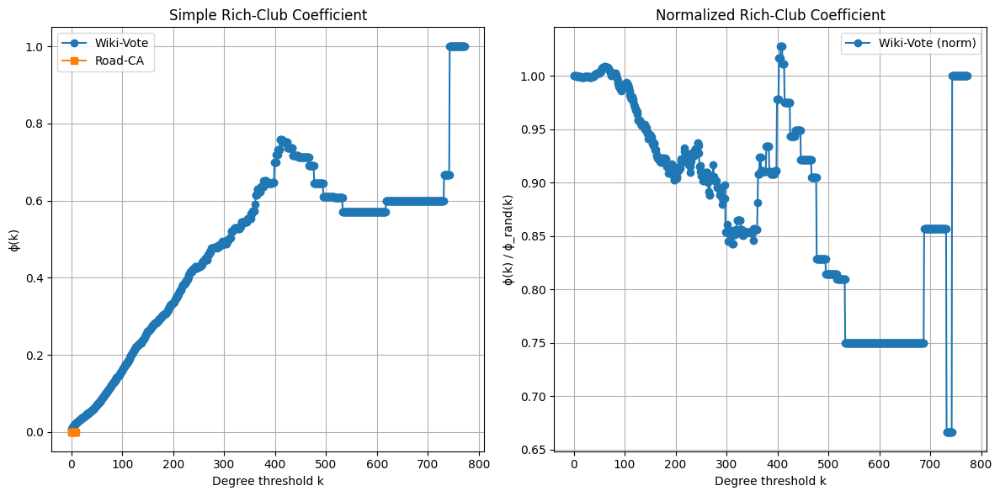

Network Analysis Exercise 3
1) Power-law behaviour
(2 points) The tables show function values for functions \(f(x)\) and \(g(x)\) on different values of \(x\). Plot the function values in a way that allows you to determine if any of the functions exhibits power-law behavior. If yes, determine the exponent.
| \(x\) | \(f(x)\) |
|---|---|
| 5.00 | 252822.43 |
| 7.50 | 84599.77 |
| 11.25 | 28308.89 |
| 16.88 | 9472.76 |
| 25.31 | 3169.79 |
| 37.97 | 1060.68 |
| 56.95 | 354.93 |
| 85.43 | 118.77 |
| 128.14 | 39.74 |
| 192.22 | 13.30 |
| \(x\) | \(g(x)\) |
|---|---|
| 3.00 | 5824779.30 |
| 5.10 | 1185913.90 |
| 8.67 | 347172.77 |
| 14.74 | 114200.30 |
| 25.06 | 40746.59 |
| 42.60 | 17235.83 |
| 72.41 | 69248.85 |
| 123.10 | 384.66 |
| 209.27 | 10.41 |
| 355.76 | 0.13 |
Solution
To provide a solution to the exercise: Provide your plot, report your judgment on power-law behavior and in case the exponent.
Data plotted for \(f(x)\) and \(g(x)\):
Power law is defined with \(P_k = Ck^\alpha\).
Values for alpha are often in the range 2-3 and taking the log of function and argument leads to a linear relation, visible as a diagonal straight line in a log-log plot.

This can be seen here where we have a straight line for \(f(x)\) but not for \(g(x)\) which suggests that we only have a power-law for \(f(x)\). But the lecture notes, that looking at the diagram alone might be deceiving. In particular, if the data is incomplete. True power law should be monotonically decreasing and node degree might deviate for small k.
So to validate this further, we can show that a function has power law behavior if it satisfies \[f(x) \sim x^{-\alpha}\] \[f(x) = C \cdot x^\alpha\] So taking logarithms gives us a linear relationship: \[\log(f(x)) = -\alpha \cdot \log(x) + \log(C)\] We can estimate the exponent \(\alpha\) using linear regression on the log-transformed data.
plot_linregress_comparison
plot_linregress_comparison (x, y, name, ax)
Estimated power-law exponent f(x): α ≈ 2.70
R-squared f(x): 1.000000
Estimated power-law exponent g(x): α ≈ 3.16
R-squared g(x): 0.850754
The estimated slope from the regression of \(f(x)\) is -\(\alpha\), giving us \(\alpha \approx 2.70\)
The \(R^2\) value of the regression is \(1.0\), indicating a strong fit.
For \(g(x)\) we see that it does not follow a clear power-law pattern based on the regression and the low \(R^2\) value.
2) Categorizing Networks
(2 points) In the lecture we discussed a simple way to quantify assortativity and to assign a network into one of the three categories by fitting a power function to the degree correlation \(\bar k_{nn}(k)\). Try this approach for the networks As3G1.txt and As3G2.txt in Ilias and report your results. Note this correlation is implemented (e.g. in networkx as average_degree_connectivity) A more formally sound version is to simply use the Pearson correlation coefficient \(r\) of the degrees at either ends of the graph’s edges. As it is normalized, it lies between \(-1≤r≤1\) and can be interpreted the same way as our correlation exponent. \[r = \frac{1}{\sigma^2_q}\sum_{jk}jk(e_{jk}-q_jq_k)\] with \(\sigma_q^2\) being the variance of excess degree distribution \(q(k)\). Luckily, this measure is also already implemented in many analysis tools (e.g. networkx as degree_pearson_correlation_coefficient). Apply the method on the network, report your result and compare to the finding for the first method. Then run a number (e.g. 10) of degree sequence preserving randomization and report if/which changes occur to the second measure.
Solution
To provide a solution to the exercise: Provide the diagram for the fitting, and your correlation exponent, the result for pearson correlation for the original and randomised networks.
The networks are stored as edge lists. As3G2 additionally has edge weights. So first we need to load them:
G1 = nx.read_adjlist("../data/As3G1.txt", nodetype=int)
print(len(G1.edges))
print(len(G1.nodes))
G2 = nx.Graph()
with open("../data/As3G2.txt") as f:
for line in f:
a, b, attr = line.strip().split(maxsplit=2)
G2.add_edge(a, b, **ast.literal_eval(attr))
print(len(G2.edges))
print(len(G2.nodes))565
430
254
77To quantify the assortativity of the network we solve \(\bar k_{nn} = ak^\mu\) for the correlation exponent \(\mu\) and categorize it. * \(μ>0\): assortative (high-degree nodes link to high-degree) * \(μ<0\): disassortative * \(μ≈0\): neutral
power_law
power_law (x, a, b)
We compute the average degree connectivity and get a dictionary keyed by degree k with the value of average connectivity.
We can fit a line on these values to get an estimation of our correlation exponent.
fit_degree_connectivity
fit_degree_connectivity (graph, title)
categorize_assortativity
categorize_assortativity (mu, name)
mu_G1 = fit_degree_connectivity(G1, "G1: Degree Correlation Fit")
mu_G2 = fit_degree_connectivity(G2, "G2: Degree Correlation Fit")
categorize_assortativity(mu_G1, "G1")
categorize_assortativity(mu_G2, "G2")

The calculated exponentv for G1: 0.523 shows a assortative degree correlation.
The calculated exponentv for G2: -0.145 shows a disassortative degree correlation.Next we should compare the average_degree_connectivity with the degree_pearson_correlation_coefficient results which returns the assortativity of graph by degree.
# compare the results
pearson_G1 = nx.degree_pearson_correlation_coefficient(G1)
pearson_G2 = nx.degree_pearson_correlation_coefficient(G2)
print(f"G1 Pearson: {pearson_G1:.4f}, G2 Pearson: {pearson_G2:.4f}")G1 Pearson: 0.7332, G2 Pearson: -0.1652Here, \(G1\) is assortative and \(G2\) is disassortative.
Next we should run 10 degree sequence preserving randomizations and show which changes occur in the second measure. We do this by swapping edges in the network.
- If the randomized networks lose any assortativity, that suggests the observed structure is meaningful.
- If the Pearson correlation stays similar → the degree sequence alone explains assortativity.
In the results we can see that for \(G1\) the assortativity clearly changes to negative or very small values suggesting that the structure is meaningful.
For \(G1\) there is no such change visible.
randomize_and_measure
randomize_and_measure (graph, n_iter=10)
Randomized Pearson G1: [0.004137654023765612, -0.0729776597452127, -0.05565167531120767, -0.10058177053837325, -0.011426365891527044, -0.027460243011809632, -0.036857387111609005, -0.046195799060784595, -0.09183068009543512, -0.03245247581482806]
Randomized Pearson G2: [-0.197891215644392, -0.11538767953142574, -0.23489350233836423, -0.15175398942284535, -0.15909663068868046, -0.1306511227926893, -0.17175835066677408, -0.1566105395514292, -0.18083547412138914, -0.2259320110296678]3) Finding a graph with certain properties
(2 points) We discussed in the lecture that there are differing definitions for average (\(C_G\)) and global clustering coefficient (\(C_{GG}\)).
- Given the double star graph family from Assignment 2.2, where we showed that both values diverge (\(C_G \rightarrow 1\), \(C_{GG} \rightarrow 0\)) for increasing \(k\) (periphery nodes): Can you find a graph family for which they approach the opposite values or at least go in the opposite direction compared to double star? In case, describe it and give the general formula for its clustering coefficients.
- What is the smallest graph you can find for which the two values differ?
Solution
To provide a solution to the exercise: Provide the description, formula, and graph.
- Ich hab keine ahnung wie ich das angehen sollte ausser das an Gpt zu senden.
In exercise 2.2 we looked at a network with two core nodes connected by an edge, and k peripheral nodes that each are connected exactly to the two core nodes (creating triangles): We observed the values for \(C_G\) and \(C_{GG}\) noting that for large \(k\), \(C_G\) was much larger than \(C_{GG}\).
So to flip it, we want: * Many connected triplets (to raise the denominator of \(C_G\)) * Few locally closed triangles for most nodes (to keep \(C_G\)) * But still many triangles in total (to raise numerator of \(C_{GG}\))
We define a graph family consisting of a clique of size \(k\) and \(n−k\) isolated nodes. The global clustering coefficient is always \(C_{GG}=1\), while the average local clustering coefficient is \(C_G=\frac{k}{n}\), which goes to \(0\) as \(n\rightarrow\infty\)
This is the opposite of the double star graph family, where \(C_G→1\), but \(C_{GG}→0\).
Global clustering \(C_GG\):
The clique has \(\begin{pmatrix}k\\3\end{pmatrix}\) triangles and \(\begin{pmatrix}k\\2\end{pmatrix}\cdot(k−2)\) triplets.
The isolated nodes add nothing.
So: \[C_{GG}=\frac{3\cdot\begin{pmatrix}k\\3\end{pmatrix}}{\begin{pmatrix}k\\3\end{pmatrix}\cdot \frac{k-2}{3}} = 1\] (since it’s a clique → every triplet is closed → \(C_{GG}=1\))
Average local clustering \(C_G\):
Clique nodes have \(C_v=1\)
Isolated nodes have \(C_v=0\)
So: \[C_G=\frac{k⋅1+(n−k)⋅0}{n}=\frac{k}{n}\]
\(→\) goes to \(0\) as \(n→∞\) for fixed \(k\)
clustered_core_with_isolates
clustered_core_with_isolates (n=10, k=3)
Create a graph with a clique of size k and n-k isolated nodes.
# Example graph with k=3 (clique) and n=10 (total nodes, 7 isolates)
G = clustered_core_with_isolates(n=10, k=3)
G1= clustered_core_with_isolates(n=15, k=6)

4) Giant component
(2 points) In the last lecture we discussed the growth of the giant component during the creation of a graph by the random model. Run an experiment with increasing values of the edge probability and report the development of the giant component size (relative to the number of nodes in the graph) in relation to the probability values.
Solution
To provide a solution to the exercise: Provide a diagram that shows the development of the size over the range of probability values.
For \(n = 1000\) nodes and \(100\) values in the probability range from \(p\in[0, 0.01]\), at each step we generate a random graph \(G(n,p)\) and compute the relative size of the largest connected component \[\frac{\text{size of largest component}}{n}\]
We plot the critical threshold for the emergence of the giant component in as approximately \(p = \frac{1}{n}\)
- Below the threshold, most components are small.
- Around the threshold, the large connected component suddenly grows.
- Above the threshold, the giant component rapidly dominates the graph.

5) Rich Club
(2 points) Select two networks from different categories of the SNAP Large Network Collection (https://snap.stanford.edu/data/index.html). Calculate the simple version of the rich club coefficient (\(\phi(k)\) ) for each network and report it in a diagram as shown in the lecture. Then calculate the improved version \(\rho_{ran}(k)\) and report the result.
Solution
To provide a solution to the exercise: Shortly describe the networks, provide the diagrams and your verdict on rich club phenomenon.
What is the formula for \(\phi (k)\) and \(\rho_{ran} (k)\).
Use each formula to implement an algorithm solving this calculation and apply it to the graph. Alternately use a predefined algorithm if it is available and just
Networks Used
Wikipedia Vote Network (directed, but we make it undirected)
- Nodes: 7,115
- Edges: 103,689
- Description: Directed graph of Wikipedia users voting in admin elections. An edge from user A to B means A voted for B.
- Source: SNAP Wiki-Vote
California road network (undirected)
- Nodes: 1,965,206
- Edges: 2,766,607
- Description: A road network of California. Intersections and endpoints are represented by nodes and the roads connecting these intersections or road endpoints are represented by undirected edges.
- Source: SNAP California Road
EU Email Communication Network (sadly does not work because of self loops)
- Nodes: 265,214
- Edges: 420,045
- Description: Directed email exchange graph from a European research institution. An edge from A to B means A sent an email to B.
- Source: SNAP Email-EuAll
Rich Club
The rich club coefficient \(φ(k)\) measures the tendency of high-degree nodes (\(degree > k\)) to be more densely interconnected than expected.
Simple Rich-Club Coefficient: \[ϕ(k)=\frac{2E_k}{N_k(N_k−1)}\]
Where:
- \(N_k\): number of nodes with degree > kk
- \(E_k\): number of edges between those nodes
Normalized Rich-Club Coefficient (Improved Version): \[ρ(k)=\frac{ϕ(k)}{ϕ_{rand}(k)}\]
Where \(ϕ_{rand}(k)\) is the rich-club coefficient for a randomized version of the network with the same degree distribution.
A value \(ρ(k)>1\) indicates a rich club phenomenon.
#Loading the graphs
#G_email = nx.read_adjlist("../data/email-EuAll.txt", nodetype=int, create_using=nx.DiGraph())
#G_email = G_email.to_undirected()
G_wiki = nx.read_adjlist("../data/Wiki-Vote.txt", nodetype=int, create_using=nx.DiGraph())
G_wiki = G_wiki.to_undirected()G_road = nx.read_adjlist("../data/roadNet-CA.txt", nodetype=int)rich_road = nx.rich_club_coefficient(G_road, normalized=False)
# doesnt work because it has self loops
# rich_email = nx.rich_club_coefficient(G_email, normalized=False)# Simple rich-club coefficient
rich_wiki = nx.rich_club_coefficient(G_wiki, normalized=False)# Normalized version
rich_wiki_norm = nx.rich_club_coefficient(G_wiki, normalized=True, Q=10)# Normalized version
#rich_road_norm = nx.rich_club_coefficient(G_norm, normalized=True, Q=10)
# tooo slow, didnt finsih. I guess the Graph is just too large.